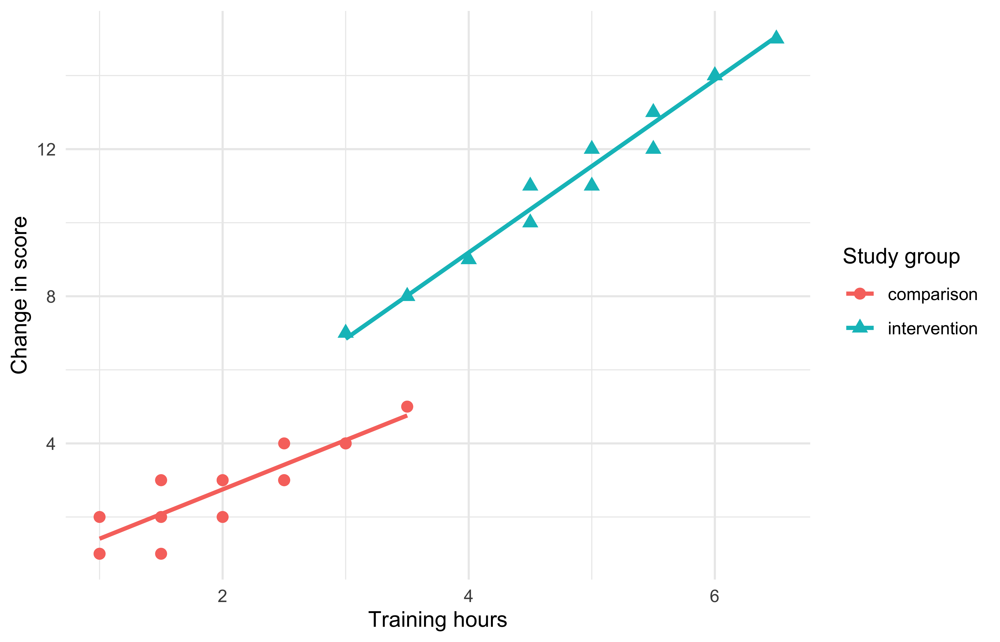

study |>
count(group)# A tibble: 2 × 2
group n
<chr> <int>
1 comparison 20
2 intervention 20An executable document contains three interleaved kinds of material:
The rendered document is a record of code executed in context, not a screenshot of an interactive session.
An executable R cell begins with ```{r} and ends with three backticks. Cell options sit at the top and begin with #|:
#| label: group-counts
#| echo: true
#| message: false
study |>
count(group)When this book renders, that pattern produces a live demonstration:
study |>
count(group)# A tibble: 2 × 2
group n
<chr> <int>
1 comparison 20
2 intervention 20The cell has:
r);demo-group-counts);Labels should be unique, descriptive, and stable. Labels with reserved prefixes such as fig- and tbl- create cross-referenceable outputs.
For an R-based .qmd, Quarto asks knitr to execute cells from top to bottom. Objects created in an earlier cell are available later in that render.
# Cell 1
study <- readr::read_csv("data/training-study.csv")
# Cell 2: depends on Cell 1
nrow(study)This has several consequences:
Chunk options are not cosmetic trivia. They determine what runs, what readers see, what can be referenced, and how output is presented.
| Option | Typical value | Code runs? | Code shown? | Output shown? |
|---|---|---|---|---|
eval |
false |
No | Yes | No |
echo |
false |
Yes | No | Yes |
output |
false |
Yes | Yes | No |
include |
false |
Yes | No | No |
warning |
false |
Yes | As configured | Warnings hidden |
message |
false |
Yes | As configured | Messages hidden |
error |
true |
Yes | As configured | Error displayed; render continues |
These options answer different questions:
evalechooutputincludewarning, message, errorUse the default when the calculation itself is part of the explanation:
study |>
summarise(
participants = n(),
mean_change = mean(change)
)# A tibble: 1 × 2
participants mean_change
<int> <dbl>
1 40 6.95The reader can inspect the instructions and the result.
echo: false: show the result, hide the implementationThis is common in a polished reader-facing report:
# A tibble: 2 × 2
group n
<chr> <int>
1 comparison 20
2 intervention 20The code still runs and remains in the .qmd source, but the rendered reader sees only the result. Hiding code is a presentation choice, not reproducibility by itself; the source must still be available to someone expected to audit it.
eval: false: show an example without running it# An illustrative call that should not run during this render
download.file("https://example.org/large-data.csv", "data/large-data.csv")This is useful for teaching installation commands, destructive examples, slow jobs, or code requiring credentials. Do not use it for code that supposedly created the reported result.
output: false: run code, hide normal outputsummary_table <- study |>
group_by(group) |>
summarise(mean_change = mean(change), .groups = "drop")
summary_tableThe object is created for later cells, and the code is visible, but the printed table is suppressed here.
include: false: setup that remains out of the documentThe first cell in this chapter loaded packages and data using:
#| include: false
library(readr)
library(dplyr)
library(ggplot2)
study <- read_csv("materials/complete/data/training-study.csv")The code ran, but neither code nor output appeared. This is appropriate for routine setup. It is not a place to conceal analytically important decisions.
Package startup messages rarely help a manuscript reader:
#| message: false
#| warning: falseSuppress expected noise only after understanding it. A convergence warning, failed transformation, or removed observation may be evidence of an analysis problem. Fix or explain substantive warnings rather than hiding them globally.
HTML can keep code available without placing it in the main reading flow:
format:
html:
code-fold: true
code-summary: "Show the R code"This affects HTML interaction. PDF cannot fold code, so decide separately whether code should be shown, hidden, or moved to an appendix.
Options can apply at three levels.
In _quarto.yml:
execute:
warning: false
message: falseUse project defaults for consistent policy across documents.
In a document’s YAML:
---
execute:
echo: true
warning: false
---Use document defaults for the intended audience of that document.
#| echo: false
#| fig-width: 7Cell options override broader defaults for one case. The practical precedence is:
project default < document default < cell optionKeep exceptions local and intentional. If every cell repeats the same option, move it to document or project YAML.
Inline code places a calculated value inside a sentence. The source pattern is:
The study contains `r nrow(study)` participants.
In this rendered chapter, the live sentence is:
The study contains 40 participants.
Other source examples include:
`r round(mean(study$change), 1)` points.`r dplyr::n_distinct(study$group)` study groups.Use short, readable expressions inline. If a calculation is complicated, create a clearly named object in a cell and insert only that object:
overall_mean_change <- mean(study$change)The prose can then use:
The mean change was `r round(overall_mean_change, 1)` points.
This keeps prose readable and makes the calculation easier to test.
A figure cell combines execution options with publication metadata:
#| label: fig-change-demo
#| fig-cap: "Change score by training hours and study group."
#| fig-alt: "Scatterplot of training hours against change score..."
#| fig-width: 7
#| fig-height: 4.5
#| dpi: 300
ggplot(study, aes(training_hours, change, colour = group, shape = group)) +
geom_point() +
geom_smooth(method = "lm", se = FALSE)The live output is Figure 4.1:
ggplot(study, aes(training_hours, change, colour = group, shape = group)) +
geom_point(size = 2.5) +
geom_smooth(method = "lm", se = FALSE) +
labs(
x = "Training hours",
y = "Change in score",
colour = "Study group",
shape = "Study group"
) +
theme_minimal()`geom_smooth()` using formula = 'y ~ x'
Important figure options include:
| Option | Purpose |
|---|---|
label: fig-name |
Creates a stable cross-reference target |
fig-cap |
Visible caption |
fig-alt |
Accessible description of information in the figure |
fig-width, fig-height |
Size of the plotting device in inches |
dpi |
Raster resolution |
fig-align |
Alignment in the output |
fig-show: hold |
Holds multiple plots from one cell together |
Plot dimensions affect the space in which the plot is drawn, not merely how a finished image is stretched. Text, facets, and legends may reflow when dimensions change.
Create the data object in code:
Then present it with a caption and table label:
knitr::kable(group_summary, digits = 1)| group | participants | mean_change | sd_change |
|---|---|---|---|
| comparison | 20 | 3.0 | 1.2 |
| intervention | 20 | 10.9 | 2.7 |
Table 4.1 is numbered and referenced from prose. If another table is inserted earlier, Quarto updates the number.
Keep a distinction between:
group_summary);knitr::kable()); andThis makes it easier to change table styling without recalculating the result.
Some R functions deliberately return Markdown or HTML. With knitr, results: 'asis' or Quarto’s output: asis can ask the renderer to interpret returned markup rather than print it literally.
Use this only when the code is intentionally generating document structure. Untrusted text must not be inserted as raw HTML, and format-specific markup may fail in PDF or Word.
By default, an error stops the render. This is usually correct: a document with a failed analysis should not silently produce a polished output.
For a teaching document that intentionally demonstrates an error:
#| error: true
mean("not numeric")The error appears in the rendered lesson and the document continues. Do not set error: true globally in a production manuscript merely to obtain an output.
Simulations, sampling, model initialisation, and some algorithms use random numbers. Without a seed, repeated renders may differ:
set.seed(20260729)
sample(1:100, 5)A seed makes the pseudorandom sequence repeatable. It does not make a simulation design appropriate or guarantee identical results across every software implementation.
Two related features can avoid unnecessary computation:
Examples:
execute:
cache: trueexecute:
freeze: autoThese improve rendering speed, but cached output can conceal missing external dependencies during testing. Before release, perform at least one clean, uncached render in a fresh copy or controlled environment.
Never use caching as a substitute for recording inputs.
The same analysis can be presented differently:
| Audience | Reasonable presentation |
|---|---|
| Analyst collaborator | Show code and output |
| Journal reader | Hide routine setup; show methods-critical code selectively |
| Auditor or reviewer | Provide source or folded code plus environment details |
| Student | Show starter code; reserve answers for solution output |
| Lecture audience | Hide most code and enlarge the explanatory figure |
Chunk options let one computational workflow support these audiences, but a document should not pretend that hidden source does not exist.
In manuscript.qmd:
include: false setup cell that loads packages and reads the CSV.change in code.tbl- cell with a caption and refer to it from prose.fig- cell with a caption, informative alt text, explicit dimensions, and both colour and shape mappings.code-fold for HTML and decide explicitly how code appears in PDF.You can explain the difference between eval, echo, output, and include; identify which cell creates every object; and trace a reported value back to the source data and code that generated it.